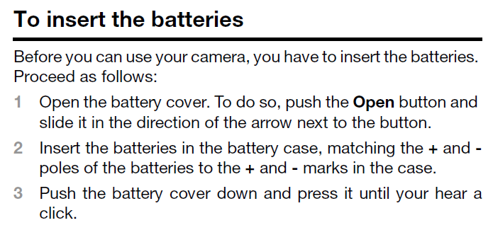
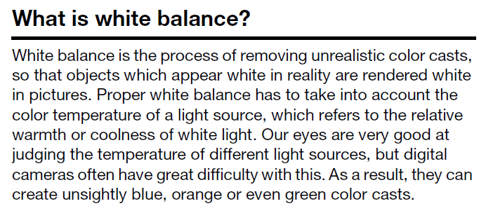
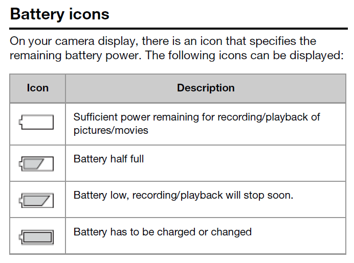

---
# Generated from DITA source
layout: default
title: "Examples core information types"
index: "../toc.html"
---
Examples core information types
Task topic
This task topic answers the question "How do I insert batteries in my camera?" It includes all the steps the user has to execute to complete that task.

Concept topic
This concept topic answers the question "What is white balance?" This background information can help users to properly set the white balance of their camera.

Reference topic
This reference topic gives an overview of the battery icons that can be displayed on a camera. It allows users to quickly look up the meaning of a particular icon.
